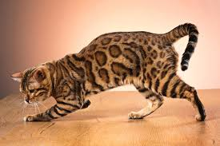

Bengal Cat
The Bengal cat is known for its wild appearance and energetic personality. They have a distinctive spotted or marbled coat that resembles that of a wild leopard.
Characteristics
- Origin: United States (crossbreed of Asian leopard cat and domestic cat)
- Life Span: 12-16 years
- Temperament: Energetic, playful, and intelligent
- Coat: Short, dense, and requires minimal grooming